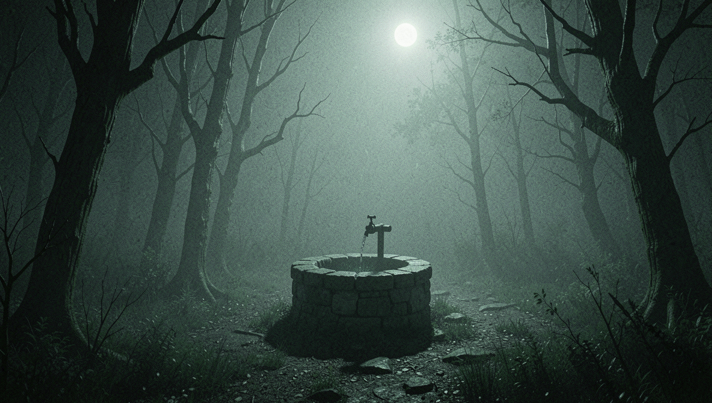

1. A fita
Uma fita VHS sem rótulo aparece na sua casa. Ninguém sabe de onde veio. Você assiste por curiosidade.

7DAYSBYSADAKODEVONINSTAGRAM
Um pequeno pesadelo interativo em VHS. Assista à fita, dirija pela estrada e descubra o que está esperando no final — de preferência com fone de ouvido e a luz apagada.
Uma fita VHS sem rótulo aparece na sua casa. Ninguém sabe de onde veio. Você assiste por curiosidade.
Assim que a tela vira estática, o telefone toca. Do outro lado, só uma respiração molhada e uma contagem.
Durante 7 noites você sonha com água parada, pedra fria e unhas quebradas arranhando a parede do poço.
No sétimo dia a televisão liga sozinha. E dessa vez ela não fica dentro da tela.
minigame 2d
Pule pedras, televisores quebrados, tufos de cabelo molhado e corvos. Você tem três vidas e 2600 metros pela frente. Chegar ao fim não é necessariamente uma boa notícia.
São 7 dias desde que você viu a fita. Dirija até o poço, desvie do que está na pista e não olhe para trás. Espaço / toque para pular.
recorde: 0m — distância até o poço: 2600m
“Rodei a fita achando que era pegadinha. Ri até o minuto 4. Hoje durmo de luz acesa.”
“Cheguei no poço no jogo e gritei tão alto que minha vizinha bateu na parede. Nota 10.”
“sete dias sete dias sete dias sete dias sete di”
Quem assiste tem sete dias. Quem mostra para outra pessoa ganha mais sete. A matemática é simples e cruel.